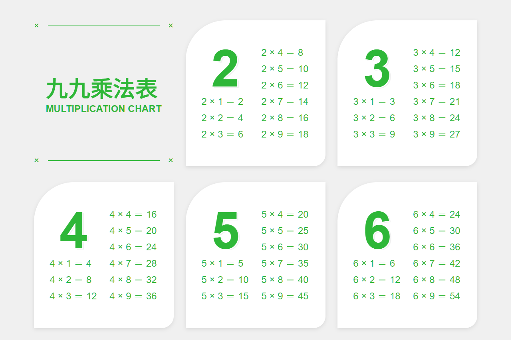

本文為挑戰六角學院 JS 新手地下城 F1 「九九乘法表」的筆記。
作品
Lynn 的 JS 新手地下城 作品列表 / 1F：九九乘法表
關卡重點
- 刻出標題區塊
- 刻出白色區塊
- 外迴圈跑出所有白色區塊
- 內迴圈放入每個白色區塊的內容
- RWD
問題解決流程
main 和 footer
我的習慣是先整理大區塊，因此先把 main 和 footer 的部分寫好。
1 | <main class="main"> |
1 | .main { |
標題區塊
標題區塊從上到下有邊框、文字、邊框三個區塊，這三個區塊裡面又有一些小區塊。
為了排版方便，整個標題區塊和白色框框的大小一致。
1 | <div class="title"> |
1 | .main .title { |
白色區塊
白色區塊的重點是弧形邊框、陰影和內外的間距。
1 | .main .card { |
外迴圈
有了白色框框的樣式之後，就用 JavaScript 重複放入 main 中。
在 main 裡面已經有標題區塊，所以可以用 appendChild 的方式放在標題區塊後面。
1 | let main = document.querySelector('.main'); |
內迴圈
外迴圈中已經放入每一個白色框框的數字標題，接下來再在內迴圈放入乘以 1~9 的式子。
1 | // i : 被乘數（左邊的數字） |
排版白色框框裡的內容。
重點是左右的式子要對齊，所以右上角的三個式子的高度要和數字標題一樣，且區塊的垂直距離要平均。
另外數字標題的白色邊框，可以用 text-stroke ；但是在 Chrome 縮放畫面時會破圖，所以我改用陰影疊加的方式。
1 | .main .card { |
RWD
最後隨喜好做一些 RWD 。
我是讓白色區塊因為視窗不夠大而換行時，讓 main 縮小，以免白色區塊已經換行了，灰色部分卻空一大塊。
1 |
|
這樣就完成了！
